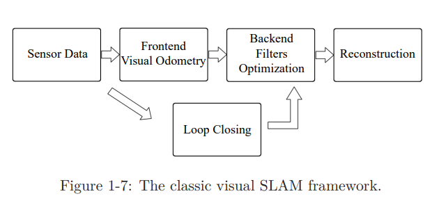
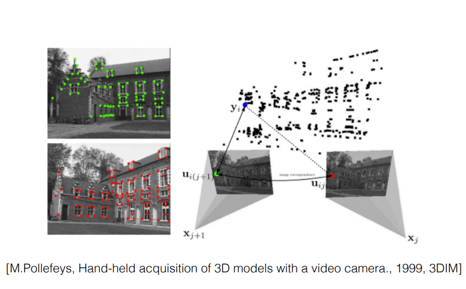
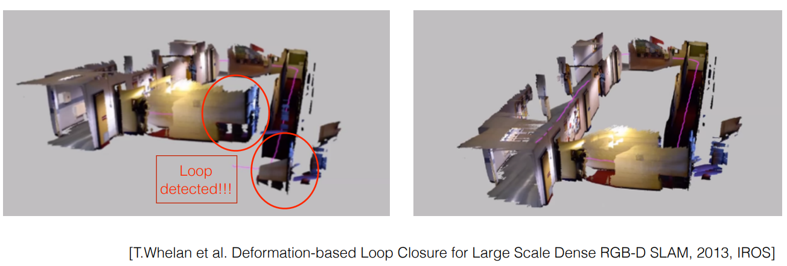

SLAM 101
SLAM stands for Simultaneous Localization and Mapping. It has been and still is one of the unsolved problems in robotics.The main purpose of SLAM is for a robot to build the map of an unknown environment as well as know its position inside that environment
Therefore SLAM tries to answer the 2 main question for a robot:
- Where am I ?
- What does my surrounding look like ?
SLAM can be divided into these core components:
- Localization: Localization is the process by which a SLAM system determines its position within an environment. It involves estimating the pose of the device down to 6 degree of freedom relative to a reference frame.
The most common algorithms used in for localization include Extended Kalman Filter(EKF), Particle Filter.
The choice of algorithm depends on factors such as the specific application, computational resources, and the characteristics of the environment. For example, in highly dynamic environments, algorithms that can handle non-linearities and uncertainties, like particle filters, may be preferred. - Mapping: Mapping involves creating a map or a representation of the surrounding as the robot moves through the environment. The type of map ranges from feature map, occupancy grid, point cloud depending on the type of sensor used.
- Sensor Integration: The SLAM system relies on integration of data from multiple sensors. This is known as sensor fusion. It enhances the robustness of the SLAM system.
In our scenario ie. the LiDAR drone a camera will be mounted on the drone for performing Visual SLAM. The data from the camera is to be integrated with the 2D LiDAR that will be attached on top of the drone for a all round SLAM system.
Lets discuss Visual SLAM more in detail..
In Visual SLAM the only sensor used is the Camera.
Here is the General Visual SLAM Pipeline

Lets go step by step:
- Sensor Data Acquisition:
This involves acquisition of data from sensors (in this case a camera) and pre-processing of the data. This step also involves acquisition and syncronisation of data from other sensors on board the robot like IMUs, motor encoders, etc. - Visual Odometry:
This involves estimation of the position of the camera based on the adjacent frames from the camera. We want to estimate the 6 Degrees of Freedom(DoF) camera pose $[R|T]$ incrementally. For monocular camera this can be done by utilizing epipolar geometry.
 - Backend Filtering/Optimization:
The backend optimization receives camera positions at different time steps from the Visual Odometry and results from the Loop Closing and then applies optimization to generate the complete optimized trajectory and map.This step involves figuring out the amount of noise present in the data received from the sensors. - Loop Closing:
Loop closing does exactly what it says it does that is to check if the camera has return to a location and orientation that has been previously visited to reduce the accumulated drift from noise. When a loop closing is identified the backend optimization is notified for further optimization.
 - Reconstruction:
This step involves creating the estimated map of the environment based on the estimated camera trajectory.
Now lets try to define this mathematically..
Lets say theres a robot with sensors mounted for performing SLAM. The sensors relay the data at discrete time steps so the time steps can be represented as $1,…,k$. The position of the robot can be represented by $x$. Therefore the position at different time steps is $x_1,…,x_k$. Lets assume that the environment hs multiple landmarks and the robot can see these landmarks at a given time instant. Lets represent these landmarks as $y$, so the $N$ landmarks in the environment can be written as $y_1,…,y_N$
Now based on this we can define the representation of the position of the robot at a given time instant as $$x_k = f(x_{k-1}, u_k, w_k)$$ where $u_k$ are the input commands and $w_k$ is the noise. Here we have used a abstract mathematical model to describe the function $f$ since the type of controller is unknown the function can represent any motion input. This is called the Motion Equation.
Due to noise being present in the equation the model is a Stochastic Model. Generally the amount of noise is very less but over the course of time the amount of noise adds up if not dealt with. The noise during each movement is random.
Now lets define the observation equation. It describes the process of the robot seeing and detecting a landmark $y_j$ at $x_k$ and generates observation $z_k,j$. This can be defined as
$$z_k,j = h(y_j, x_k, v_k,j)$$ where $v_k,j$ is the noise in the observation.
Therefore we can describe the SLAM process using these 2 equations,

References
[1] 14 Lectures on Visual SLAM: From Theory to Practice - Github Repo
[2] SLAM for Dummies - Book